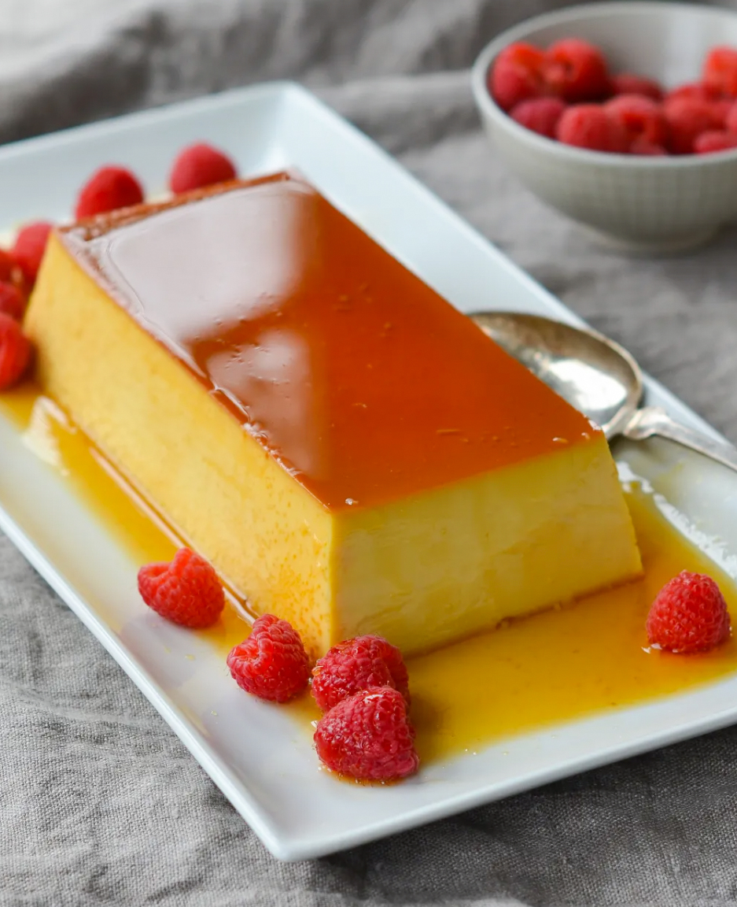

Flan

Ingredients:
- ⅔ cup sugar
- 2 large eggs plus 5 yolks
- 1 (14-oz) can sweetened condensed milk
- 1 (12-oz) can evaporated milk
- ½ cup whole milk (half-and-half or 2% milk may be substituted but do not use skim milk)
- 2 teaspoons vanilla extract
- 1 tablespoon Bourbon (see note)
- ½ teaspoon salt
Steps:
- Stir the sugar and 1/4 cup water together in a medium saucepan until the sugar is completely moistened.
Bring the mixture to a boil over medium-high heat, without stirring. Continue cooking until the mixture
begins to turn golden.
- Gently swirling the pan, continue to cook until sugar is a pale honey color.
- Remove from the heat and swirl the pan until the sugar is a reddish-amber color and fragrant, 15 to 20
seconds.
- Carefully swirl in 2 tablespoons of warm tap water until incorporated – be careful as the mixture will
bubble and steam. The water helps thin the caramel, so it doesn’t all stick to the pan after the flan bakes
in the oven.
- Pour the caramel into 8½ x 4½-inch loaf pan and set aside. The caramel will harden in the pan.
- Whisk together the eggs and egg yolks in large bowl.
- Add the sweetened condensed milk, evaporated milk, whole milk, vanilla, Bourbon, and salt and whisk until
incorporated.
- Strain mixture through a fine-mesh strainer into a larger bowl. The strainer will catch little bits of egg
that you don’t want in your flan.
- Pour the strained custard into the loaf pan over the caramel. Cover the loaf pan tightly with aluminum foil.
- Place the loaf pan in the center of a 9×13-inch baking or roasting pan (preferably with high sides) to make
a water bath. Place the nested pans in the oven; using a tea kettle or pitcher, pour hot water around the
loaf pan until it reaches about halfway up the sides of the loaf pan. The purpose of the water bath is to
moderate the heat and ensure that the mixture cooks evenly into a smooth and creamy custard. (Cheesecake
uses the same technique.)
- Bake for 75 to 90 minutes. Very carefully pull back the foil (there will be steam that has accumulated under
it) to ensure the custard is set around the edges but still a bit jiggly in the center. The custard should
not be completely set when it is removed from the oven; it will continue to cook as it cools. Remove the
pans from the oven. Remove the foil and leave the flan in the water bath for about one hour to cool.
- Remove the loaf pan from water bath, cover tightly with plastic wrap, and chill overnight or up to 4 days.
To unmold the flan, carefully slide a knife around the edges of the pan.
- Invert a platter with a raised rim on top of the flan and turn the pan and platter over. If it doesn’t
release immediately, let it sit inverted for a minute and it should eventually slide out. Remove the loaf
pan and, using a rubber spatula, scrape the residual caramel over the flan. You won’t be able to release all
of it – that’s okay. Slice the flan and spoon the sauce over the individual servings. Serve with berries, if
you like.